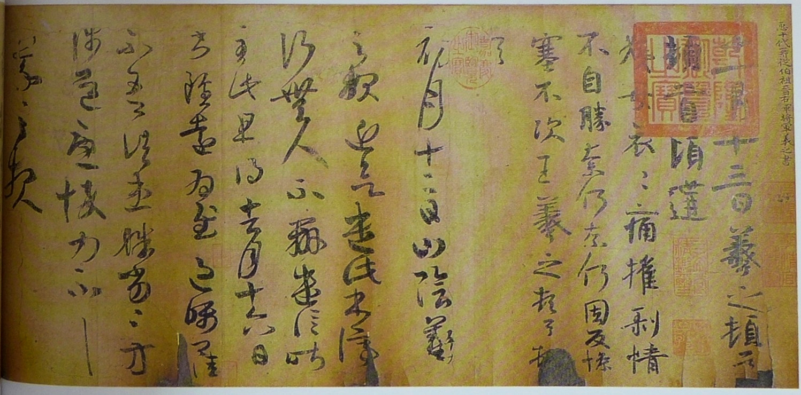
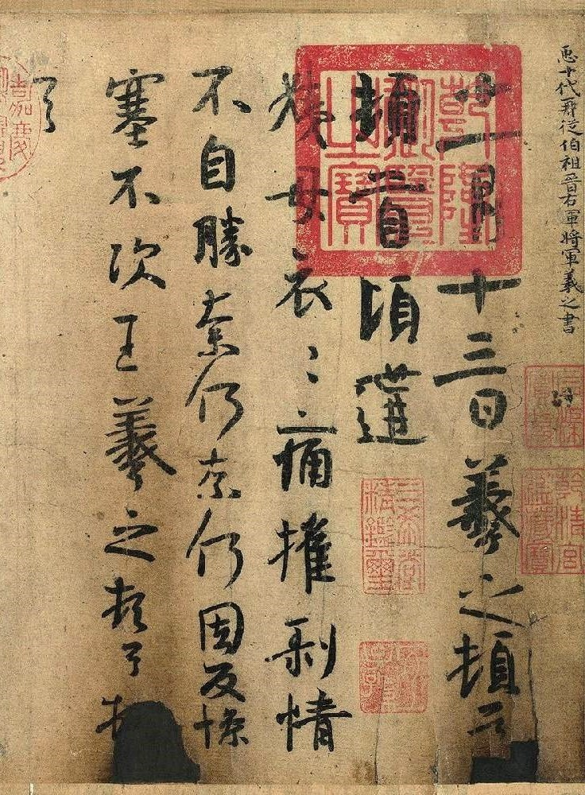
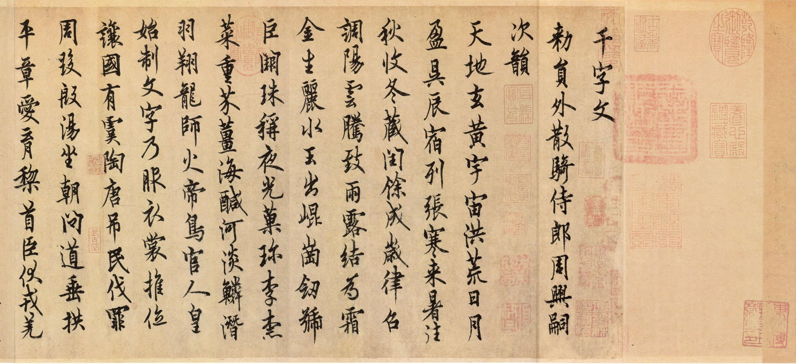
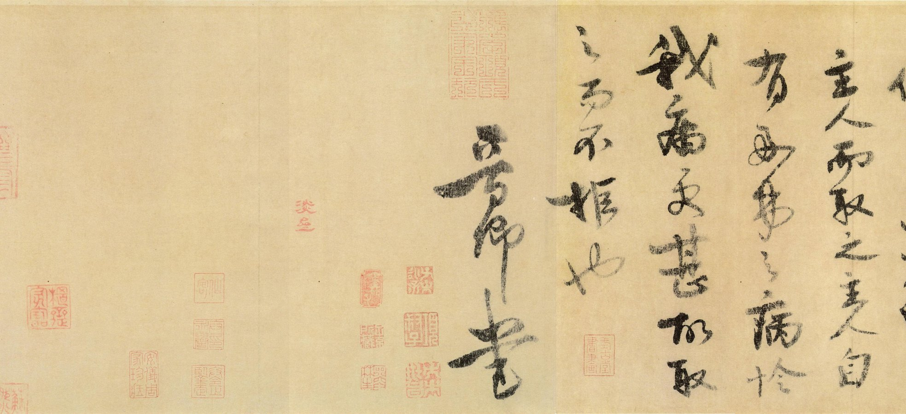
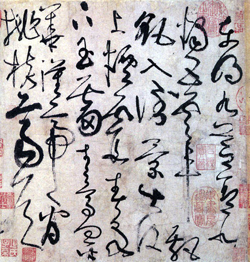
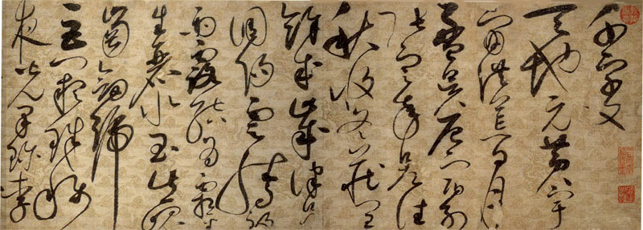
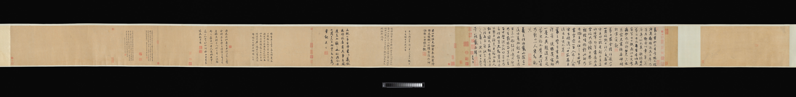
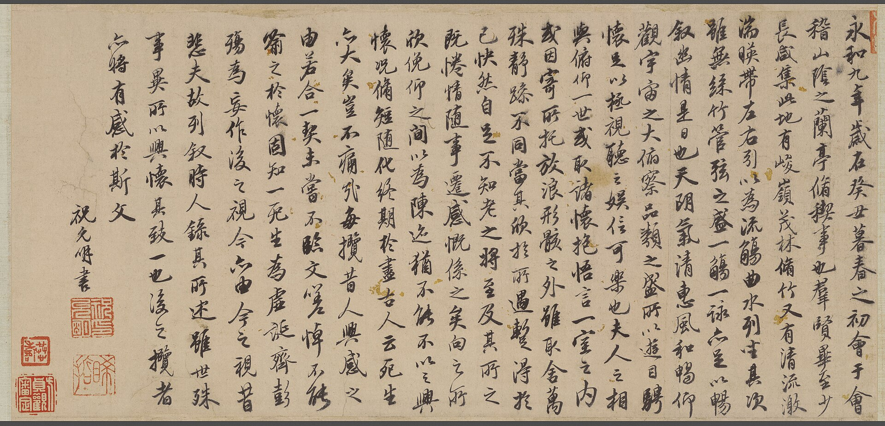

给聪伟的看展预备资料｜整理：2026-11-09，增补三块资料与经文复核：2026-11-11（台北时间）｜存疑＝证据不足或说法不一，不作定论｜转引＝转述二手来源，未核原书或原卷
按推演安排，非官方展品单。单元结构是策展推演；信仰切入点是讲法，不是史实，不是这些作品本身的基督教内容。经文用和合本简体（open-bibles，公有领域），并经信望爱 API 复核（个别标点、「神」前空格、传3:11「原文作永远／原文是永远」微异，文意一致）。开场先说：这些字美，是神给人的创造力，我们来欣赏，不是来批判。
方法：1 普遍恩典；2 世界观解读；3 压力点；4 渴慕与回响；5 保罗在雅典式。
开场经文（方法1，对象：成人／儿童）：雅各书1:17「各样美善的恩赐和各样全备的赏赐都是从上头来的，从众光之父那里降下来的；在他并没有改变，也没有转动的影儿。」
策展思路：把二王家族的源头放在最前；《万岁通天帖》是最接近王羲之真迹面貌的唐摹，《曹娥诔辞》给出东晋小楷的时代样貌。
策展思路：辽博唐帖是强项；从欧阳询的险劲法度，到张旭、怀素的今草狂草，看二王笔法怎样被“立成法”。
策展思路：宫廷带头崇晋；徽宗狂草与高宗洛神赋并置，再配《萧翼赚兰亭图》把兰亭故事讲给观众听。
策展思路：赵孟頫“书宗二王”是元代复古主线；辽博本《秋声赋》为主件，馆外对照一件大都会公版卷，说明赵氏如何书写王羲之故事。
策展思路：用祝允明再写《兰亭》与序厅首尾呼应；王铎收束到明末清初对二王的再消化。
| 项目 | 内容 |
|---|---|
| 全称 | 大统斯垂——辽宁省博物馆藏“二王”书风文物展 |
| 时间 | 计划 2026年12月（开幕日未公布） |
| 性质 | 辽博2026年13项精品阵地展之一；展品为本馆馆藏 |
| 官方简介 | “东晋‘二王’，书史丰碑……全面系统梳理从王羲之、王献之以及后世对‘二王’书风继承与发展的历史脉络。精选行书、草书、楷书等多种书体的经典作品……展现‘二王’流派‘妍美流便’‘萧散简远’的独特艺术风格……” |
| 已公布展品 | 无（截至2026-11-11检索，沿用11-09结论） |
| 来源 | 辽宁省文旅厅转辽宁日报 2026-03-03｜雅昌｜美术报 2026-03-07 |
| 展品 | 藏地 | 核实结论 |
|---|---|---|
| 《万岁通天帖》 | 辽博 ✓ | 正确。官方名“唐佚名摹王氏一门书翰卷”，禁止出境文物（第二批）。 |
| 《曹娥诔辞卷》 | 辽博 ✓ | 作者需改：官方定为“东晋佚名”，不是王羲之；墨迹本，不是摹本。 |
| 欧阳询《仲尼梦奠帖》 | 辽博 ✓ | 正确。注意是行书，不是楷书；禁止出境文物（第二批）。 |
| 宋高宗《草书洛神赋》 | 辽博 ✓ | 作者正确（赵构，退位后作）。尺寸两说存疑。 |
| 赵孟頫《秋声赋》 | 辽博 ✓ | 正确，全称“元赵孟頫行书秋声赋卷”，书欧阳修赋。 |
每件高档推演展品下分三块：1. 作品背后的故事；2. 基础知识（年代、作者、材质尺寸、藏地、真伪／摹本性质）；3. 题字、题跋、印章与文化内容。查不到的写「未查到」。长篇赋文、序文、千字文只标明所书文本并摘句，不录全文。

局部 可自由使用 Wikimedia Commons

卷首王羲之《姨母帖》 可自由使用 Commons
武则天访求王羲之书迹。万岁通天二年（697），王羲之十世孙、凤阁侍郎王方庆进呈先祖一门书翰（史籍记十一代二十八人、原为十卷，称《宝章集》）。武则天在武成殿召集群臣共赏，命崔融作《宝章集》记其事；又命弘文馆以双钩填墨法摹留内府，原件装裱后发还王家。真迹后来下落不明，留存的是这件唐摹残卷。宋代岳珂始称之为《万岁通天帖》。流传中曾遭两次火劫（明华夏真赏斋火、清乾隆间乾清宫火），火烧痕犹在，重装后次序有错乱。
卷尾有王方庆衔名：「万岁通天二年，四月三日，银青光禄大夫、行凤阁侍郎、同凤阁鸾台平章事、上柱国、琅邪县开国男臣王方庆进」（题签中的「臣」为武则天新造字）。各帖上方有「臣某代祖某书」一类题签。王徽之《新月帖》有姚怀珍、满骞押署；王慈《柏酒帖》有唐怀充押署。
递藏大要：北宋建隆史馆、宣和／绍兴内府，韩庄敏，岳珂（《宝真斋法书赞》著录），元王芝、岳浚、张雨、华幼武，明华夏真赏斋，清内府；1922年溥仪携出，后归东北博物馆（今辽博）。前后钤唐宋以来诸旧藏印。卷后有南宋岳珂、元张雨、明文徵明、董其昌等跋，称钩摹精到。曾刻入《秘阁续帖》、华夏《真赏斋帖》、文徵明《停云馆帖》、王肯堂《郁冈斋帖》、清《三希堂法帖》等。
释文（据腾讯新闻转引的禁止出境文物介绍，残字作□；各家释读略有出入，宜再对原卷）：
王羲之《姨母帖》（行书，6行42字）十一月十三日，羲之顿首、顿首。顷遘姨母哀，哀痛摧剥，情不自胜。奈何、奈何！因反惨塞，不次。王羲之顿首、顿首。
王羲之《初月帖》（草书，8行61字）初月十二日山阴羲之报：近欲遣此书，停行无人，不办。遣信昨至此。旦得去月十六日书，虽远为慰。过嘱，卿佳不？吾诸患殊劣殊劣！方涉道，忧悴。力不具。羲之报。
王荟《疖肿帖》荟顿首，□□□□，为念。吾疖肿□□，甚无赖，力不次，□顿首。
王荟《郭桂阳帖》翁尊体安和，伏慰侍省，小儿并健。适遣信集泽山村，自当令卿知吾言之不虚也。郭桂阳已至，将甲甚精。唯王临庆军马小不称耳！以病告公差耶，秋冬不复忧病也。迟更知问。七月廿七日
王徽之《新月帖》二日告：□氏女新月哀摧，不自胜，奈何奈何。念痛慕不可任。得疏，知汝故异恶，悬心。雨湿热，复何似，食不？吾牵劳并顿。勿复数日还，汝比自护。力不具。徽之等书。
王献之《廿九日帖》廿九日献之白：昨遂不奉别，怅恨深。体中复何如。弟甚顿勿勿，不具。献之再拜。
王僧虔《太子舍人帖》太子舍人王琰牒 在职三载，家贫，仰希江郢所统小郡，谨牒。七月廿四日臣王僧虔启。
王慈《柏酒帖》得柏酒等六种。足下出此已久，忽致厚费，深劳念慰，王慈具答。范武骑
王慈《汝比帖》汝比可也，定以何日达东，想大小并可行。迟陈赐还。知汝劣劣，吾常耳。即具。
王志《一日无申帖》一日无申，只有正属雨气方昏，得告，深慰。吾夜来患喉痛，愦愦，何强，晚当故造迟叙谈。惟反，不多。（北大书法所录本残字更多，作「祗□」「何□」「惟反，□□」，残字存疑）
岳珂、张雨、文徵明、董其昌跋文较长，本页不逐录，见下引腾讯文。张雨谓「双钩之法，世久无闻，米南宫所谓下真迹一等」；文徵明称「在今世当为唐法书第一」；董其昌称「是必薛稷、钟绍京诸名手双钩填廓」。
来源：禁止出境文物系列（十六）·腾讯新闻（转引）；北大书法所·王东亭文
【曹娥诔辞卷】图片因版权未放在公开页，请点右侧链接到中华珍宝馆查看。全卷缩略 外链查看 中华珍宝馆 作品页
此卷是为表彰东汉孝女曹娥而作的诔辞。曹娥的故事见《后汉书·列女传》等：父溺江，娥寻父不得，亦投江。澎湃转述辽博说明：卷上文字与《后汉书·列女传》及《世说新语》大多吻合。上海博物馆条目记：文章为东汉上虞县长度尚所作诔辞，书于东晋穆帝升平二年（358），故又名《升平帖》。
书心有南朝梁内府徐僧权、唐怀充、满骞押署，唐怀素、韩愈等题名观款；卷后有宋高宗、元虞集、赵孟頫、乔篑成等十余家跋，卷尾有康熙跋。递藏：南朝萧梁内府，南宋内府、贾似道，元内府、郭天锡、柯九思，明韩世能、王锡爵，清王时敏、清内府等（上博条目）。
字形扁方，捺笔厚重，尚带隶意，代表东晋今楷趋于成熟的面貌，是讲二王楷书时代背景的重要参照。
本卷诔辞全文释文：未查到（本次未见逐字可靠录文；不宜用后来通行的《曹娥碑》刻本文字直接代替）。
来源：澎湃 2023-11（合规同矩展）；上海博物馆“晋唐宋元书画国宝展”条目；作者三说及封存三年说见中国网·辽博讲解员访谈（本次该页下载失败，沿用 2026-11-09 已核记录）
【仲尼梦奠帖】图片因版权未放在公开页，请点右侧链接到中华珍宝馆查看。全卷分段缩略（引首乾隆“真迹无疑”） 外链查看 中华珍宝馆 作品页
欧阳询（557—641），字信本，官至太子率更令，楷书「欧体」名家，行书墨迹传世极少。此帖以孔子「梦奠两楹」的典故为核心（出《礼记·檀弓》：孔子梦坐奠于两楹之间，自知将死，年七十二），进而感叹圣贤亦终归寂灭，并说到善恶报应。它不是一通普通应酬信，而是以书载道的晚年之作。原与《张翰帖》《卜商帖》合称「史事三帖」，后来拆散。
引首有乾隆「真迹无疑」四字，并题「向已论梦，此文不复赘言。乾隆丁巳孟冬，御笔。」加盖「乾隆」白文连珠印。
帖文（78字，据腾讯新闻转引）：仲尼梦奠，七十有二。周王九龄，具不满百。彭祖资以导养，樊重任性，裁过盈数，终归寂灭。无有得停住者。未有生而不老，老而不死。形归丘墓，神还所受，痛毒辛酸，何可熟念。善恶报应，如影随形，必不差二。
元郭天锡跋（摘关键句，全文见该转引）：「率更初学王逸少书，后渐变其体，笔力险劲，为一时之绝……向背转摺，浑得二王风气，世之欧行第一书也。」并记前后御府法书印、绍兴小印，以及购于扬中斋、曾入贾似道（秋壑）等事。
元赵孟頫跋（据同一转引）：「欧阳信本书，清劲秀健，古今一人。米老云：‘庄若对越，俊若跳掷’，犹似未知其神奇也。……至元廿九年闰月望日，为右之兄书。吴兴赵孟頫。」
明朱应祥跋：「此梦奠帖行体又从兰亭中来。」另有明杨士奇（正统八年，1443；该转引文误标为「清代」）、清高士奇、王鸿绪等跋。高士奇记此帖曾刻入绛帖，并经项元汴天籁阁收藏。
来源：禁止出境文物系列（八）·腾讯新闻（转引）；上海博物馆条目；辽宁日报 2019-11-04（本次该页下载失败，沿用 2026-11-09 已核记录）

卷首 可自由使用 Commons

卷尾北宋王诜（晋卿）跋 可自由使用（同上）
《千字文》是南朝梁周兴嗣奉敕编成的千字韵文，传统说法是取王羲之书中互不重复的字重新编纂，后来成为童蒙读物，也是历代书家反复书写的范本。欧阳询这卷行书，可与《梦奠帖》并看他如何从二王脱胎，再变成险劲一路。
所书为周兴嗣《千字文》。开篇常作「天地玄黄，宇宙洪荒……」（各本或有避讳改字）。卷尾有北宋王诜（晋卿）跋，跋中引东坡对欧书的评语。王诜跋全文：本次未逐字核对。印章与其余题跋：未查到完整清单。
来源：Wikimedia Commons；中华珍宝馆作品页；辽宁省一级文物名录

局部 可自由使用 Commons
此卷写的是南朝诗四首：前两首为庾信《道士步虚词十首》中的第六、第八首，后两首为谢灵运《王子晋赞》及《岩下一老公四五少年赞》。诗中有游仙、求道的内容，讲时可尊重原意，不必改写成基督教故事。旧时曾归在谢灵运名下；明董其昌始定为张旭，并刻入《戏鸿堂法帖》。张旭被看作二王今草发展到狂草的关键人物，所以常被放进「二王书风」的叙述里。
四诗篇目见上。诗句全文本次未逐字核对，不录。鉴定讨论中常被提到的异文：第一首《步虚词》，《初学记》作「北阙临玄水」，墨迹作「丹水」（或与避宋始祖赵玄朗讳有关）；末首「不可别」，墨迹或作「不别可」（王乃栋文，与刻本有异）。卷上有「宣和」「政和」等印，其可靠性亦有人质疑。董其昌跋曾指出：《宣和书谱》只云谢灵运《古诗帖》，未必即是含《步虚词》的这一卷。
来源：界面新闻；王乃栋《古诗四帖》辨伪（文中转引杨仁恺、谢稚柳、启功、鉴定组意见）
【论书帖】图片因版权未放在公开页，请点右侧链接到中华珍宝馆查看。外链查看 中华珍宝馆 作品页
怀素以狂草著名，有「以狂继颠」之称。这件《论书帖》却写得比较匀稳，没有常见的狂怪之势，内容是他谈学书的话：山不高则地无灵，书不精则无令名，并说到近年「颠逸」更胜往年，末句问及《二谢》书与山中事。可以用来对照「狂草」与「二王小草」两条路。辽博2018年「中国古代书法展」展出过。
释文（通行录文，转引书法空间／中华珍宝馆等；末字各本有疑）：为其山不高，地亦无灵；为其泉不深，水亦不清；为其书不精，亦无令（今）名，后来足可深戒，藏真自风发。近来已四岁，近蒙薄减，今所为其颠逸，全胜往年。所颠形诡异，不知从何而来。常自不知耳，昨奉《二谢》书，问知山中事有（？）也。
清乾隆二十年（1755）有御笔释文，文字与上略有出入（如「深感／深戒」「今亦／今所」等），未在本次对原跋逐字复核。卷后有赵孟頫、项元汴等人题跋的记载；常见印记包括「宣和」「政和」「绍兴」及清内府诸印。各跋全文：本次未逐字核对。
来源：中华珍宝馆作品页（同上）；释文转引 书法空间·论书帖（本次原页下载失败，据检索摘要转引，并与珍宝馆简介核对一致）
暂无可靠公版图。网上图和「孙过庭三十八岁」一类说法需谨慎，以名录定名为准。
旧传为孙过庭所书《千字文》「第五本」。孙过庭是初唐书家、书论家，《书谱》是二王一系今草的经典。把这卷放进展览，是因为它的草法属于二王今草一路，又可讨论「名家款」和「后来临仿」之间的差别。
所书为《千字文》，书体以今草为主，掺以章草。卷中钤有唐「龟龙麟凤」朱文印、南唐「建业文房之印」及「合同」朱文印、宋米芾「宝晋斋」白文印（上博条目）。释文即《千字文》，本次未核卷上是否有避讳改字或残缺。其余题跋全文未查到。
来源：辽宁省一级文物名录；上海博物馆条目（本次该页下载失败，据检索摘要转引）

局部 可自由使用 Commons
赵佶（1082—1135）书画极精，创瘦金体，却是亡国之君。他一生多次书写《千字文》，流传至今通常说只剩两件：上海博物馆藏瘦金体楷书本（崇宁三年，二十二岁，卷后有「赐童贯」一类记载），和辽博这件四十岁时的狂草本。此卷写在一整张没有接缝的描金云龙笺上，长逾十一米，既是书法，也是北宋宫廷造纸和描金工艺的实物。书风承接张旭、怀素一路，可讲二王今草在宋代宫廷里的延续。《千字文》文本本身又传说取自王羲之字，和展览主题相扣。
所书为周兴嗣《千字文》全文。英文维基及人民网文提到，中间或因避讳改了几个字。卷上改字详情本次未逐字核对，不录全文。卷背／款侧有「御书」印及赵佶花押。其余题跋：未查到完整清单。
来源：英文维基（已核页面）；中国考古网（Internet Archive）；人民网 2014-09-01及2014-04-23（本次原页下载失败，相关句为转引）
【草书洛神赋】图片因版权未放在公开页，请点右侧链接到中华珍宝馆查看。缩略 外链查看 中华珍宝馆 作品页
赵构（宋高宗）是徽宗第九子，在北宋灭亡后建立南宋。他自述自束发即喜作字，五十年间几乎无一日舍笔墨，并在《翰墨志》里说自己临摹魏晋以来笔法，于《禊帖》（《兰亭序》）「测之益深，拟之益严」（辽宁日报 2021 引；原书原文本次未逐字对核）。这卷是他退位做太上皇、居德寿殿以后所书，内容是曹植《洛神赋》。曹植写人神道殊、所求不能得；有解说把高宗选这篇赋和他自身的政治处境联系起来，这是后人解读，不是题跋里的自述。
所书为曹植《洛神赋》全文，并省去所有「兮」字。辽宁日报指出，有的字很像王羲之《十七帖》和孙过庭《书谱》里的同一字。款识「德寿殿书」，印「德寿殿御书宝」，卷首「雪轩」「真澹」。《洛神赋》全文不录；赵岩、宋献跋全文本次未逐字核对。
来源：辽宁日报 2021-01-11（本次已打开）；中华珍宝馆作品页（同上）
【秋声赋】图片因版权未放在公开页，请点右侧链接到中华珍宝馆查看。卷首“秋聲賦 歐陽子方夜讀書” 外链查看 中华珍宝馆 高清浏览
欧阳修《秋声赋》写秋夜读书，闻风雨秋声，感万物凋零、人生劳苦。赵孟頫（1254—1322）主张「书宗二王」，多次书写古文名篇。他把这篇赋写成行书长卷，既是元代复古的标本，也让「秋声」和「无常」的主题留在字里。
卷首可见「秋聲賦 歐陽子方夜讀書」。所书即欧阳修《秋声赋》全文（414字），本页不录原文。辽宁日报解读指出，卷中「天」「为」「清」等字的写法和《兰亭序》里的同一字很接近。其余题跋全文未查到。
来源：辽宁日报 2021-02-01 版面PDF（2026-11-09 已核，本次下载失败）；中华珍宝馆高清页（同上）
暂无可靠公版图。网上常见图多为上海博物馆本（有大德元年款），不能与辽博本混用。
陶渊明辞官归田，作《归去来兮辞》。赵孟頫是宋室后裔而出仕元朝，对「归隐」既向往又难以实行，一生多次书写这篇文字。存世较常被提到的有上博本、辽博本、湖州博物馆本。辽博本无年款，卷首附陶渊明画像，并有其弟赵子俊题跋，适合讲「书宗二王」之外，还有他心里的「回家」。
卷首有陶渊明画像及赵子俊题记。所书为《归去来兮辞》。赵子俊跋全文、卷上释文与其余印章：本次未逐字核对。
来源：辽宁省一级文物名录；书法空间·赵孟頫归去来卷（本次原页下载失败，据检索摘要转引，该页自称资料来自辽博「山高水长」展）

Four anecdotes from the life of Wang Xizhi 可自由使用（CC0，Met） ｜主图来自 Met collection API primaryImage
这不是辽博展品，只作元代单元的馆外对照：赵孟頫不但学二王的字，还把王羲之的故事写成书卷。用来说明「书宗二王」不只是笔法，也包括对右军人格与轶事的追慕。
四则轶事的具体篇名和释文：本次未查到。大都会网页本次返回 429，开放 API 只有题名、尺寸、年代等字段，没有说明文字。待能打开馆页或图录后再补。
来源：Met 40509；本次复核依据 collectionapi.metmuseum.org 对象 40509 JSON（2026-11-11）

可自由使用 Commons（原图出自辽博官网）｜全卷另见 Commons 全卷
永和九年（353）王羲之写《兰亭序》，起于修禊雅集，收于「死生亦大矣」。明代吴门书家祝允明（1460—1526）再写全文，文徵明（1470—1559）补画兰亭图，成为书画合卷。辽宁日报（2025-04-03）称之为二人友谊与对隐逸向往的见证。它是「明代学二王」最直接的物证，也和序厅首尾呼应。
引首：篆书「兰亭」，「祝京兆书文，文待诏补图。王奉直篆额。」卷后有文徵明自题及清王澍跋。作者印常见记载有「祝允明印」「晞哲」「文仲子」「悟言室印」等（珍宝馆，转引）。
所书即《兰亭序》全文。开篇：「永和九年，岁在癸丑，暮春之初，会于会稽山阴之兰亭，修禊事也。……」本页不录全文。
王澍跋释文（转引雅墨客网录文，未对原卷）：「平生见祝京兆书，凡数十百卷，莫有同者。……此卷乃余雍正五年冬所得，自昭明文选楼下者，风神朗畅……七年正月廿有三日，良常王澍书于梁鸿溪上凤皝桥之南楼。」文徵明自题全文：未查到。
来源：Wikimedia Commons；辽宁日报 2025-04-03（转引检索摘要）；中华珍宝馆作品页；王澍跋转引 雅墨客网
核实依据：辽宁省文旅厅《全省博物馆馆藏一级文物名录》（2025-02）。「中」＝和主题相关，但可能分到其他展，或近期刚展出过。下列只作简表，三块资料能补的补，查不到的标明。
| 展品（名录定名） | 档 | 已知要点 | 缺口 |
|---|---|---|---|
| 南宋赵构行书白居易诗卷 | 中 | 可与《洛神赋》配看赵构行、草。藏地辽博，一级名录已核。 | 尺寸、年款、释文、题跋未查到。 |
| 南宋赵昚章草书后赤壁赋卷 | 中 | 宋孝宗章草，写苏轼《后赤壁赋》，可讲南宋宫廷复古。藏地已核。 | 尺寸、题跋、卷上释文未查到。 |
| 北宋欧阳修行书自书诗文稿卷 | 中 | 北宋文人尺牍书风；与二王关系不如前面几件直接。藏地已核。 | 篇目、尺寸、题跋未查到。 |
| 南宋陆游行书自书诗卷 | 中 | 南宋文人行书。藏地已核。 | 篇目、尺寸、题跋未查到。 |
| 元鲜于枢草书王安石诗卷／摹补高闲草书千字文卷 | 中 | 元代复古派，与赵孟頫齐名。藏地已核。 | 两件需分条核实尺寸与题跋，本次未展开。 |
| 元赵孟頫行书心经册 | 中 | 2026-07～10 刚在辽博「微笑」展出过，可能要轮休。若展出，讲佛教「空」与传道书「虚空」是两种答案，尊重而不贬低（见单元3）。 | 尺寸、题跋未查到。 |
| 元赵孟頫行书苏轼烟江叠嶂诗（沈周、文徵明补图）卷 | 中 | 赵孟頫行书，后有明代补图。藏地已核。 | 尺寸、题跋未查到。 |
| 清王铎书画合册 | 中 | 王铎取法二王和米芾，可作明末清初收尾。藏地已核。 | 册内具体作品、尺寸、题跋未查到。 |
| 宋佚名萧翼赚兰亭图卷 | 中 | 画唐太宗遣萧翼从辩才处赚取《兰亭序》的故事，适合当叙事展品；单元2信仰切入已用此故事。藏地已核。 | 尺寸、是否宋人摹本、题跋与画上文字未查到。 |
董其昌：辽博藏有他的行书卷（如《东方朔答客难并自书诗卷》，据辽博明清书法概述），但不在一级名录里，所以只写在这里备查，不列为预估。
东晋 358 《曹娥诔辞》：东晋小楷的时代样貌
东晋→唐 697 《万岁通天帖》：王羲之、王献之一门书迹的唐摹本，二王的源头
初唐 欧阳询《仲尼梦奠帖》《行书千字文》：「初学王逸少」，在二王基础上变出险劲一路
盛唐—中唐 张旭《古诗四帖》（传）、怀素《论书帖》、唐人《草书千字文第五本》：二王今草发展成狂草／今草
北宋 1122 宋徽宗《草书千字文》：宫廷里的狂草
南宋 宋高宗《草书洛神赋》：皇帝亲自倡导「回到晋人」
元 赵孟頫《秋声赋》《归去来辞》：「书宗二王」的复古运动；鲜于枢与他呼应
明 祝允明写《兰亭序》，文徵明补图：吴门书家直接追摹兰亭
明末清初 王铎：取法二王，同时走向奔放（中档）
| 类别 | 张数 | 文件 | 说明 |
|---|---|---|---|
| 可自由使用 | 8 | c-wansui-detail、c-yimu、c-gushisitie、c-ouyang-qzw-start、c-ouyang-qzw-wangshen、c-huizong-qzw、c-zhuyunming-lanting、c-zhao-wangxizhi-anecdotes-met | 前7张 Wikimedia Commons 公有领域；大都会赵孟頫卷主图为 CC0（Met open access），可自由使用。 |
| 仅限课堂 | 5 | 曹娥诔辞、仲尼梦奠帖、草书洛神赋、秋声赋、论书帖（公开页仅放链接） | 中华珍宝馆网站的缩略预览图，有些是分段拼排的。原作本身是公有领域，但这些数字图来自商业平台，所以只建议课堂和个人学习使用，公开发布前要另找授权图。 |
没有用任何AI生成的图。辽博官网（lnmuseum.com.cn）此前检索时一直超时，本次未再强抓。页面图片可点击，用 OpenSeadragon 放大查看（CDN，未切瓦片）。2026-11-11 已用本地程序检查：13 张均为可打开的 JPEG，无坏图。
下列链接以 2026-11-09 或 2026-11-11 实测为准。本次打不开、只据旧录或检索摘要的，标「转引」或「本次下载失败」。
| 来源 | 用途 |
|---|---|
| 辽宁省文旅厅·2026年辽博展览剧透 | 展览官方简介 |
| 辽宁省文旅厅·全省馆藏一级文物名录（PDF） | 核实藏地、定名 |
| 雅昌·辽博2026展览计划 | 展览信息 |
| 美术报 2026-03-07 | 展览信息 |
| 澎湃·曹娥诔辞展出（2023） | 曹娥诔辞（本次已打开） |
| 中国网·曹娥诔辞讲解 | 作者三说、封存三年（本次下载失败，沿用 11-09） |
| 上海博物馆·曹娥诔辞条目／梦奠帖条目／千字文第五本条目 | 尺寸、递藏、作者问题（第五本条目本次下载失败，转引） |
| 腾讯新闻·梦奠帖／万岁通天帖 | 禁止出境介绍、释文、题跋（转引公众号文） |
| 辽宁日报·梦奠帖解读 | 释文、流传（本次下载失败，沿用 11-09） |
| 辽宁日报·赵构洛神赋解读 | 洛神赋（本次已打开） |
| 辽宁日报·秋声赋解读（PDF） | 秋声赋（2026-11-09 已核，本次下载失败） |
| 辽宁日报 2025-04-03·祝允明兰亭 | 祝允明卷（转引检索摘要） |
| 北大书法所·万岁通天帖／古诗四帖辨伪 | 学界观点、部分释文（本次已打开） |
| 界面新闻·古诗四帖 | 尺寸、诗篇、递藏 |
| 英文维基·赵佶草书千字文／考古网快照／人民网 | 草书千字文（人民网为转引） |
| 书法空间·论书帖／书法空间·归去来卷 | 释文与辽博本基本信息（本次原页失败，转引） |
| Met 40509 及 collection API | 馆外对照卷；馆页 429，API 已核 |
| 雅墨客网·王澍跋 | 祝允明卷王澍跋（转引） |
| 中华珍宝馆：曹娥｜梦奠｜洛神赋｜秋声赋｜论书帖｜欧阳询千字文 | 基本信息、高清浏览（需在线看；课堂用图） |
和合本经文：open-bibles chi-cuv-simp（Public Domain，本地 verse.py）；信望爱 API https://bible.fhl.net/json/qb.php?version=unv&chineses=…&chap=…&sec=…&gb=1 | 2026-11-11 取文并复核 |